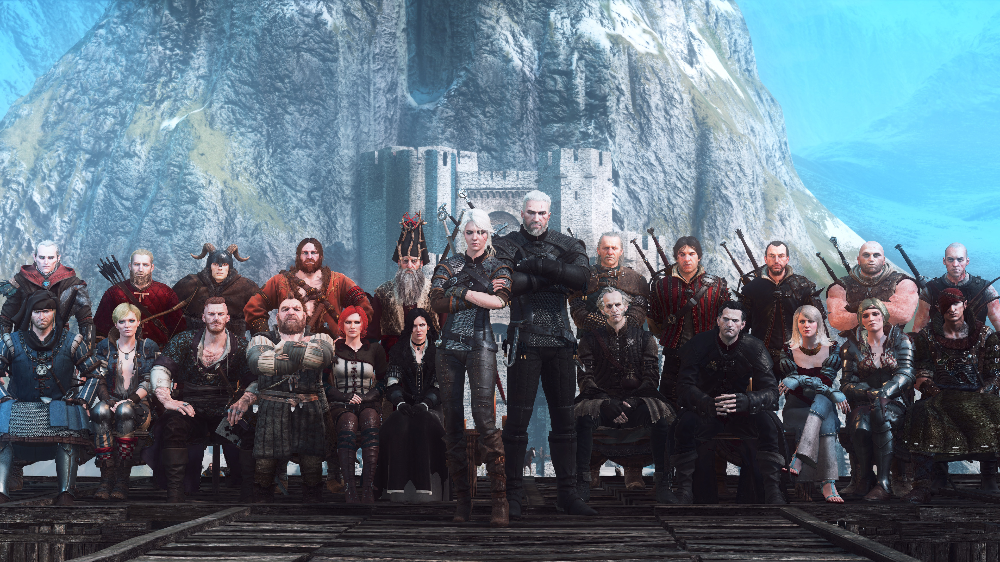

Каэр Морхен (ориг. Kaer Morhen, искажённая Старшая Речь Caer a'Muirehen — Крепость Старого Моря) — горная крепость, в которой на протяжении нескольких веков располагалась одна из шести известных ведьмачьих школ — Школа Волка. Каэр Морхен находится далеко на севере Синих Гор — формально, на территории Каэдвена, однако мало кто знает о её существовании, а местонахождение и путь в крепость известны лишь избранным. Дорога в замок лежит меж высоких скал горного хребта. Найдя едва заметную щель, путник попадает в туннель, который со временем расширяется, а при выходе его взгляду открывается вид скалистой, окружённой горами долины и скрытой в ней крепости. Близ замка начинает своё течение Гвенллех, Река Белых Камней, которую нужно пересечь, чтобы добраться до крепости. Долина Каэр Морхен вытянута с юга, откуда через лес ведёт тропинка в замок — на север, где располагается большое озеро. В лесу, находящемся близ цитадели, проходит петляющая, едва заметная тропинка, названная молодыми ведьмаками «Мучильней» за свою сложность и опасность. На ней юные ученики совершенствовались в скорости бега и контроле дыхания.
Каэр Морхен (ориг. Kaer Morhen, искажённая Старшая Речь Caer a'Muirehen — Крепость Старого Моря) — горная крепость, в которой на протяжении нескольких веков располагалась одна из шести известных ведьмачьих школ — Школа Волка. Каэр Морхен находится далеко на севере Синих Гор — формально, на территории Каэдвена, однако мало кто знает о её существовании, а местонахождение и путь в крепость известны лишь избранным. Дорога в замок лежит меж высоких скал горного хребта. Найдя едва заметную щель, путник попадает в туннель, который со временем расширяется, а при выходе его взгляду открывается вид скалистой, окружённой горами долины и скрытой в ней крепости. Близ замка начинает своё течение Гвенллех, Река Белых Камней, которую нужно пересечь, чтобы добраться до крепости. Долина Каэр Морхен вытянута с юга, откуда через лес ведёт тропинка в замок — на север, где располагается большое озеро. В лесу, находящемся близ цитадели, проходит петляющая, едва заметная тропинка, названная молодыми ведьмаками «Мучильней» за свою сложность и опасность. На ней юные ученики совершенствовались в скорости бега и контроле дыхания.
 Школа Волка (ориг. Wiedźmińska Szkoła Cechu Wilka) — одна из нескольких известных ведьмачьих школ, действовавших на Континенте. Именно к этой школе принадлежит знаменитый Геральт из Ривии. Она располагается в крепости Каэр Морхен в окрестностях Каэдвена. После падения крепости и гибели большинства ведьмаков Волков возглавлял единственный из выживших наставников — Весемир. Известные ведьмаки: Геральт из Ривии, Весемир, Ламберт, Эскель, Койон, Цири